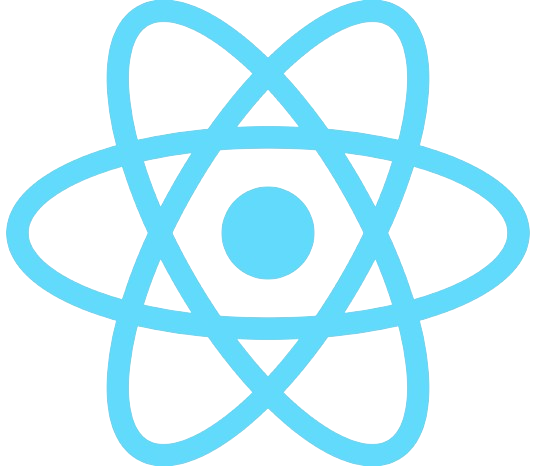

Projet Ydays
Ce projet Ydays est un projet de groupe qui consiste à créer une application qui a comme référence un réseau social et aussi une application de lecture. Celle-ci consiste à poster des histoires,
peu importe le genre et ensuite faire en sorte que les utilisateurs puissent aimer ou mettre en favori l'histoire. C'est une façon de remettre la lecture au goût du jour et de permettre aux
gens de partager leurs histoires tout dans la bienveillance bien évidemment.
Pour ce projet, nous avons eu une année pour le réaliser. Nous avons utilisé la technologie suivante :
- React Native pour faire une application sur mobile 
Pour ce projet, j'ai eu le rôle de développeur full-stack. J'ai donc été en charge de la partie développement du projet que ce soit le front-end ou le back-end.
Pour le début je faisais plus du design pour mettre en place le design de l'application. Ensuite j'ai fait la partie back-end pour mettre en place la base de données et les routes.
Enfin j'ai fait la partie front-end pour mettre en place les pages et les fonctionnalités de l'application.
Ce projet m'a permis de découvrir de nouvelles technologies et de m'améliorer en développement web.
D'apprendre à travailler en équipe et de m'organiser pour réaliser un projet dans les temps.
Ensuite j'ai appris à travailler avec des technologies que je ne connaissais pas et à les maîtriser pour réaliser le projet. Ce qui fait qu'au debut l'avancee etait plutot lente
mais au fil du temps le developpement etait bien plus optimise et rapide.
Voici quelques images de l'application :